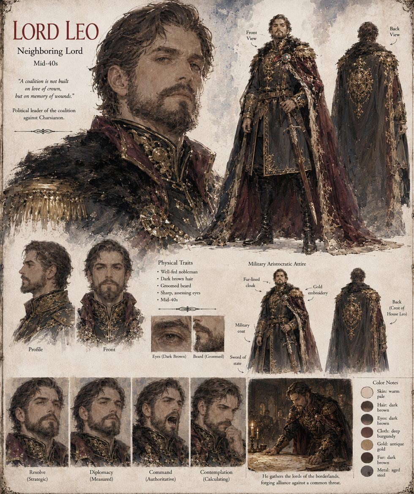

Lord Leo
Neighboring lord · mid-40s · political leader of the coalition against Charsianon
His lands border Charsianon on three sides, and his grandfather lost a war and a daughter to Bardas's grandfather over exactly forty acres of poor grazing. He finds the Doctrine of the Stolen Vessel considerably easier to credit than his peers do, and spends the spring praying loudly in rooms where he can be seen and writing letters to every lord who has ever resented Charsianon its river crossing.
He rehearses his speech — mercy for the man, judgment only for the thing wearing him — to an elderly spaniel, Sabbas, who sleeps through it. On the third reading he notices that the speech was never built to forgive Bardas of anything; it was built to be forgiven, by history, for what he meant to do regardless. The chronicles quote it nearly word for word, though he never finished delivering it.
“A coalition is not built on love of crown, but on memory of wounds.”